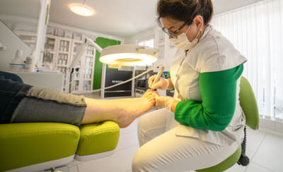
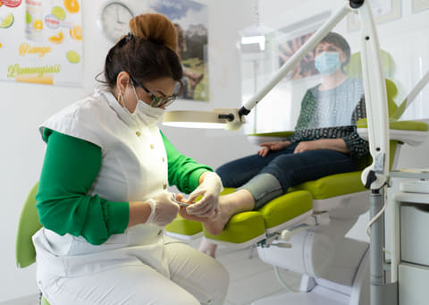
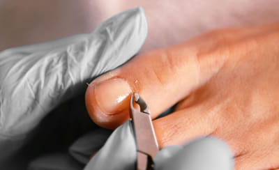
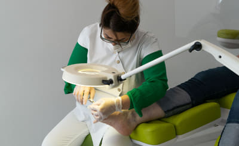
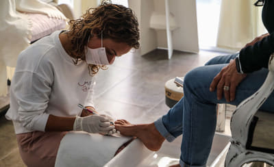
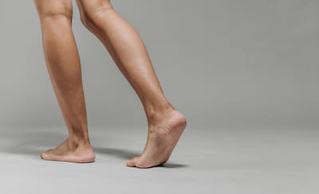
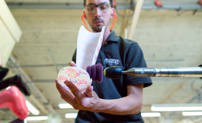
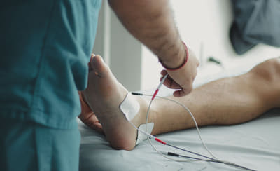
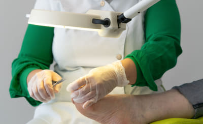
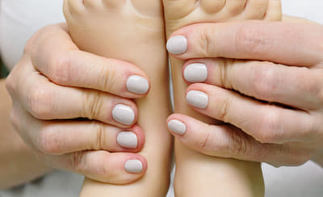

Quiropodía
El mantenimiento del pie sano: uñas, durezas y callosidades en una sesión. Sales caminando cómodo el mismo día.
desde 35 €orientativo · sesión completa
Especialistas en quiropodía
Clínica podológica en Madrid Oeste. Exploramos, te explicamos qué le pasa a tu pie y te damos un presupuesto cerrado por escrito antes de empezar. Primera visita sin compromiso y plantillas fabricadas a medida.
WhiteMoon Podología es una clínica de barrio en Madrid Oeste con gabinete propio para quiropodía, cirugía ungueal, biomecánica y ortopodología. El mismo equipo te lleva de la exploración a las plantillas, sin derivarte de un sitio a otro.
Cada caso empieza igual: te escuchamos, exploramos el pie en camilla y en marcha, y te explicamos de dónde viene el dolor sin tecnicismos. Después recibes un presupuesto cerrado por escrito y decides tú, sin prisa.
Trabajamos con instrumental estéril de un solo uso y protocolo de trazabilidad. Y si vienes por una uña encarnada que te da respeto, dilo: vamos a tu ritmo y con anestesia bien puesta.

Cuéntale a Marcos qué te pasa y te llamamos para cerrar día y hora. Los importes son precios orientativos: el definitivo te lo damos por escrito tras la exploración.

El mantenimiento del pie sano: uñas, durezas y callosidades en una sesión. Sales caminando cómodo el mismo día.
desde 35 €orientativo · sesión completa

Onicocriptosis. Liberamos el borde clavado con anestesia local y, si se repite, valoramos cirugía ungueal definitiva.
desde 60 €orientativo · cirugía desde 220 €

Verrugas plantares causadas por el VPH. Las tratamos por sesiones y te decimos cuántas necesitará tu caso.
desde 60 €orientativo · por sesión

Hiperqueratosis y helomas (los «ojos de gallo»). Retiramos la lesión y buscamos por qué se te forma, para que no vuelva.
desde 35 €orientativo · incluido en quiropodía

Exploración biomecánica en camilla y en marcha. Te explicamos cómo apoyas y de dónde viene el dolor.
desde 60 €orientativo · estudio completo

Fabricadas a partir de tu molde y tu estudio, no de una talla estándar. Con revisión de adaptación incluida.
desde 180 €orientativo · par a medida

Revisión de sensibilidad y riego, cuidado de uñas y durezas sin agredir la piel, y pautas de revisión periódica.
desde 45 €orientativo · revisión de control

Onicomicosis y pie de atleta. Confirmamos que sea hongo antes de tratar y hacemos seguimiento del crecimiento de la uña.
desde 40 €orientativo · primera sesión
Fascitis, metatarsalgias, ampollas de repetición y elección de zapatilla. Adaptado a tu deporte y a tus kilómetros.
desde 60 €orientativo · valoración deportiva

Pie plano, marcha con las puntas hacia dentro, verrugas y uñas. Se revisa mientras el pie crece, que es cuando se corrige mejor.
desde 35 €orientativo · revisión infantil
Cuatro pasos, en este orden y sin saltarse ninguno. No empezamos ningún tratamiento sin tu visto bueno.
Sin compromiso. Nos cuentas qué te duele y desde cuándo, y exploramos el pie con calma.
Valoración en camilla y estudio de la marcha cuando el caso lo pide. Te explicamos cómo apoyas.
Cerrado, por escrito y desglosado. Te lo llevas a casa y decides tú, sin que nadie te meta prisa.
Lo hacemos en las sesiones acordadas y revisamos después que el pie siga respondiendo bien.
Por escrito y desglosado antes de empezar. Sin cargos que aparecen a mitad del tratamiento.
Colegiados y con una persona de referencia por área. Siempre sabes quién te trata.
Control de esterilización por ciclo, material de un solo uso y registro de cada instrumento.
Si te da respeto que te toquen los pies, nos lo dices y adaptamos la sesión. Sin prisas y sin juicios.
No tratamos pies, tratamos personas. Por eso solo proponemos lo que hace falta: si tu caso se resuelve con una quiropodía y un cambio de calzado, te lo diremos aunque nos dé menos trabajo.
Y si lo que ves necesita traumatología, dermatología o una prueba de imagen, te derivamos a un compañero de confianza en vez de improvisar.
Es el asistente de esta demo. Detecta el tratamiento que necesitas, recoge tu nombre y tu teléfono, y avisa al equipo al instante para que te devuelva la llamada.
Marcos pregunta una cosa cada vez y responde corto. En tres pasos —tratamiento, nombre y teléfono— la solicitud queda registrada y el equipo recibe el aviso en el móvil.
No cierra la cita él: la clínica te llama para cerrar día y hora. Y no pide más datos de los que hacen falta para devolverte esa llamada.
Tres áreas de trabajo dentro del mismo gabinete, cada una con su equipo y su equipación.
El día a día del pie y las uñas, incluida la cirugía menor con anestesia local.
De dónde viene el dolor al caminar y cómo se corrige el apoyo, con soporte a medida.
Los dos extremos que más control necesitan: el pie que ya no avisa y el que todavía crece.
IVA incluido. Son precios orientativos de referencia de esta demo: el importe final depende de tu caso y se entrega por escrito tras la exploración.
Estas cifras son orientativas y no constituyen un presupuesto. Tras la primera visita y la exploración recibirás un presupuesto cerrado por escrito, detallado y sin cargos añadidos.
Entre 30 y 45 minutos. En esa sesión se trabajan uñas, durezas y callosidades, y sales caminando con normalidad el mismo día.
Puedes hablar con Marcos, nuestro asistente del chat: eliges el tratamiento, dejas tu nombre y teléfono, y te llamamos para cerrar día y hora. También puedes llamarnos al 643 199 580 o escribir a comercial@whitemoon.es.
No. Se trabaja con anestesia local, así que durante la sesión no se siente dolor. Después suele bastar con analgesia habitual y en 24-48 horas se hace vida normal.
Entre 7 y 10 días desde el estudio de la pisada, porque se fabrican a partir de tu molde. Incluimos una revisión de adaptación a las pocas semanas para ajustarlas.
Son precios orientativos. El importe final depende de tu caso y se te entrega por escrito, detallado y cerrado, después de la exploración y antes de iniciar cualquier tratamiento.
Sí. En pie diabético revisamos sensibilidad y riego, tratamos uñas y durezas sin agredir la piel y pautamos revisiones periódicas. Si detectamos una lesión que requiera derivación, te lo decimos y te orientamos.
Sí. Hacemos podología infantil: pie plano, alteraciones de la marcha, verrugas plantares y uñas. Revisar mientras el pie crece es cuando más margen hay para corregir.
Dirección
Avenida de España 24
28220 Majadahonda, Madrid
Teléfono y WhatsApp
Horario
L–V 9:30–14:00 y 16:00–20:00
Sábado y domingo cerrado
Cuéntale a Marcos qué te pasa en el pie. Recoge tus datos y te llamamos para cerrar día y hora. La primera visita es sin compromiso.
Llamar al 643 199 580¿Dolor agudo o uña encarnada? Llámanos
Tus datos solo se usan para contactarte sobre tu solicitud.